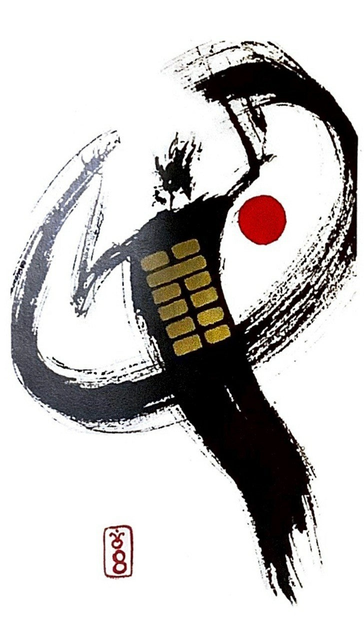

수지비
평괘 4
사람이 모여 있으면 반드시 서로 친함이 있다
양팔을 가득 벌려 다정한 교감으로 함께 어울리는행복한 상황을 표현한 그림
친하다.서로 견주다.사귐.단합.단결.단체.상부상조.화합.조합.연합.협력.협동.공동체의 결속.
연애운
행복한 연애
사업운
원활.긍정적.협업.동업.공동사업..사회사업
속마음
썸호감도 높고 긍정적인 마음.꽤 마음에 드는 마음
1년 이상행복하고 계속 함께 하고 싶은 마음
이별 후긍정적인 마음으로 재회하고 다시 함께 하고픈 마음
솔로연애운
좋은 이성 만날 가능성 높다
건강운
간.심장.과로.피부병